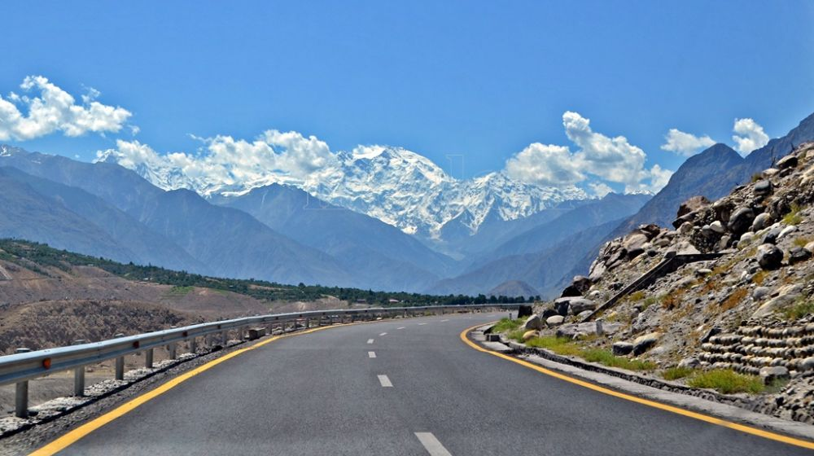

Gallery



Nomal Valley is one of the most beautiful valleys in Gilgit-Baltistan, Pakistan. It is famous for its green fields, mountains, lakes, and peaceful environment.
Nomal Valley is located near Gilgit city. Visitors enjoy its natural beauty, fresh air, rivers, and traditional culture.
The valley is surrounded by green fields, flowing streams, snow-covered mountains, and beautiful forests.
Nomal is also known as the gateway to the famous Naltar Valley and attracts visitors from all over Pakistan.
Nomal Lake is a peaceful and scenic lake surrounded by green mountains. It is a popular destination for sightseeing, photography, and relaxing in nature.
Das-e-Basi is a beautiful organic nature resort located in Nomal Valley. It offers comfortable accommodation, delicious local food, fruit orchards, and stunning mountain views, making it a perfect place for families and tourists.
Frost Berry Cafe is a popular place in Nomal Valley where visitors can enjoy refreshing drinks, coffee, desserts, and snacks in a pleasant atmosphere.
Burger Beast is a well-known fast-food restaurant in Nomal Valley. It serves delicious burgers, fries, and other tasty meals, making it a favorite spot for both locals and tourists.

Nomal Valley is one of the most beautiful valley tourist destination in Gilgit-Baltistan. Visitors come here to enjoy breathtaking mountain views, green fields, Nomal Lake, local culture, and peaceful surroundings.
Email: rsbutt0000@gmail.com
Contact:03115435785